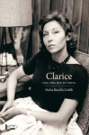
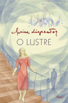
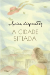

Obras
As obras da Clarice são marcadas pelo intimismos, já que tematiza o psicológico dos personagens, que, em alguns dos casos, passam por ua epifania (reconhecimento de uma verdade sobre si ou sobre o mundo)
Todas as Cartas, 1ª Ed. (2020)
Todas as Crônicas 1ª Ed. (2018)
Todos os Contos, 1ª Ed. (2016)
Uma Vida que Se Conta (2013)
O Lustre (1946)
A Cidade Citiada(2013)

Clarice Lispector
Nascida em 10 de dezembro de 1920 de origem Ucraniana da aldeia de Tchetchelnik, Clarice Lispector é considerada uma das maiores expoentes da literatura brasileira no século XX, possuindo como primeira obra o livro "Perto do coração selvagem" do qual recebeu o prêmio Graça Aranha e consquistou o público com sua linguagem elevadamente poética. Saiba mais